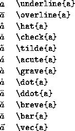

There are various control sequences for producing underlining, overlining and various accents in mathematics mode. The following table lists these control sequences, applying them to the letter a:
It should be borne in mind that when a character is underlined in a mathematical manuscript then it is normally typeset in bold face without any underlining. Underlining is used very rarely in print.
The control sequences such as \' and \", used
to produce accents in ordinary text, may not be used in
mathematics mode.